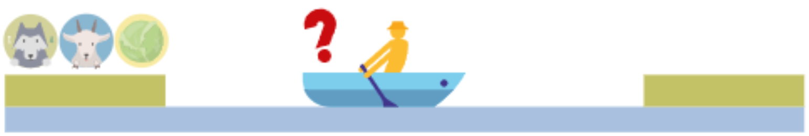
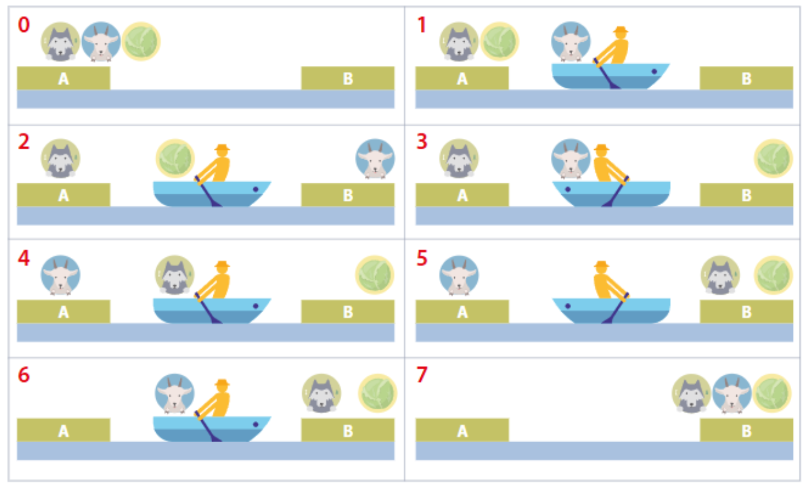

Su una riva di un fiume ci sono un contadino, un lupo, una capra e un cavolo. Il contadino dispone di una barca su cui può portare con sé una sola cosa alla volta. Come può attraversare il fiume salvando capra e cavolo, sapendo che:
Situazione iniziale nel problema del contadino:
A, barca, riva B.lupo con capra senza contadino; mai lasciare capra con cavolo senza contadino.B.Modelliamo il problema come una tripla (I, O, R):
A e barca in A).B).Risolvere il problema = trovare una sequenza di stati s0, s1, ..., sk tale che
s0 ∈ I, sk ∈ O, e per ogni passo (s_t, s_{t+1}) ∈ R.
Nota: il problema ammette più soluzioni; quella sopra è una delle sequenze minime corrette.
Una possibile rappresentazione visiva della soluzione passo-passo:
Possiamo descrivere la strategia in linguaggio naturale, con diagrammi o in pseudocodice. L’esecutore (umano o macchina) deve poterla comprendere ed eseguire.
# Pseudocodice (sequenza di operazioni)
porta(CAPRA, A→B)
torna_solo(B→A)
porta(CAVOLO, A→B)
riporta(CAPRA, B→A)
porta(LUPO, A→B)
torna_solo(B→A)
porta(CAPRA, A→B)
La correttezza discende dal rispetto dei vincoli di sicurezza in ogni stato intermedio.